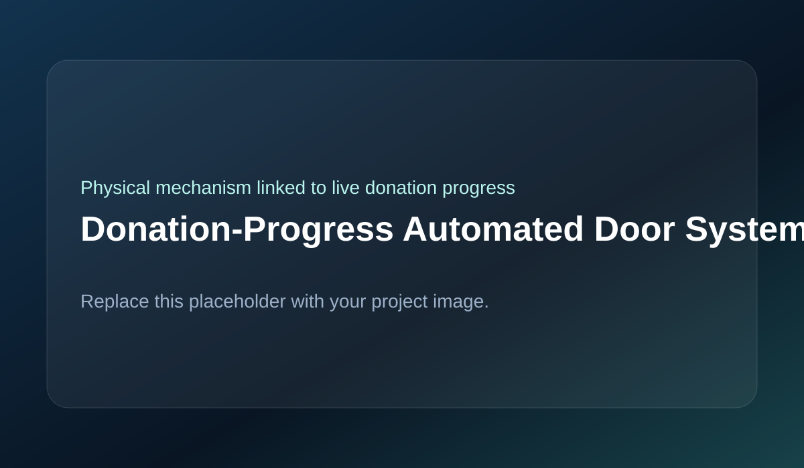
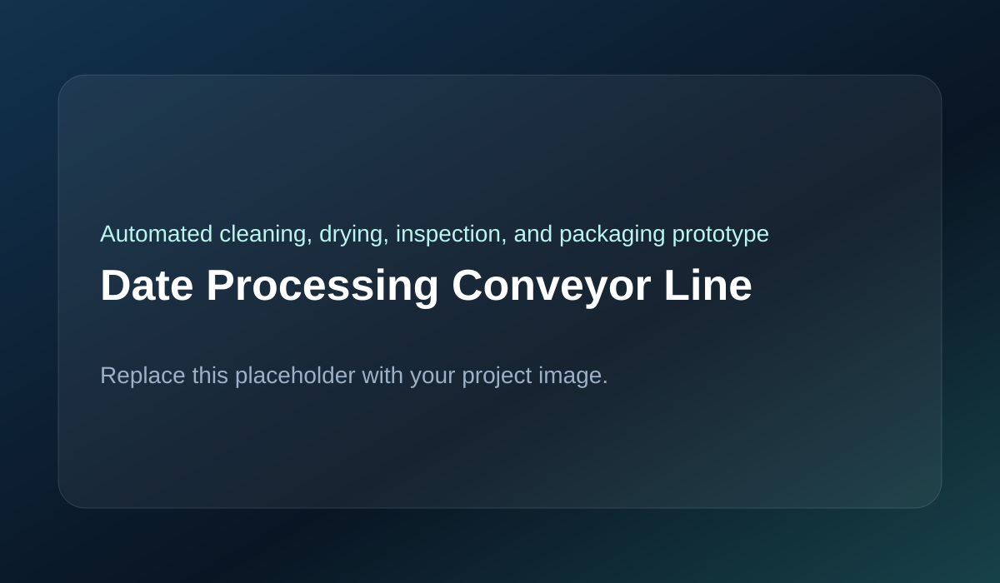
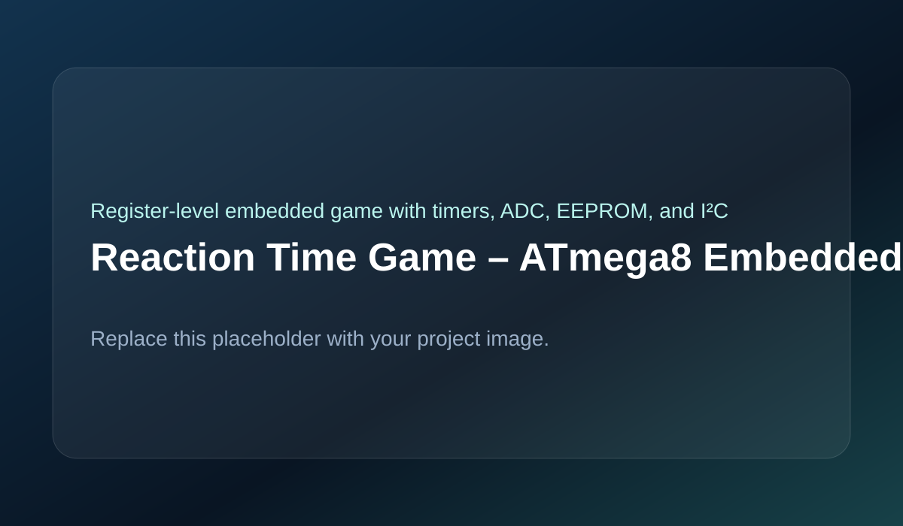
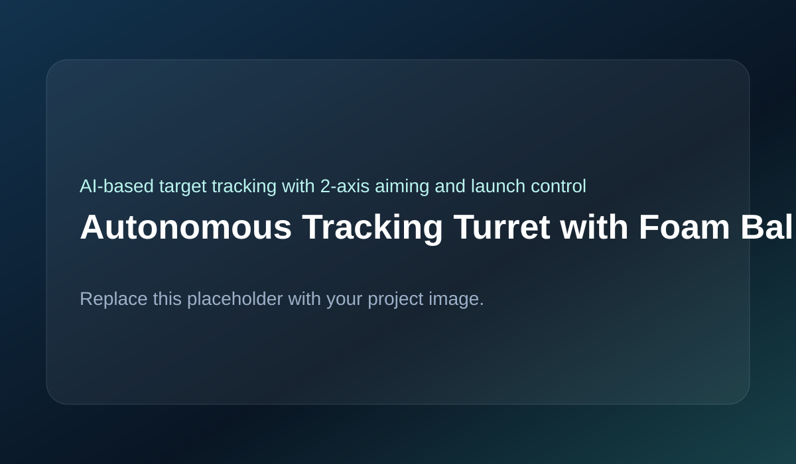

Selected Projects
A collection of robotics, embedded, automation, and assistive technology projects. Each project has its own page, image, and technical summary.

LiDAR + OAK-D + ROS autonomous navigation platform
Autonomous RC Car (ROS-Based System)
Converted a standard RC car into an autonomous navigation platform for the Unmanned Vehicle System Competition (UVS26), integrating LiDAR, stereo depth sensing, distributed embedded control, and ROS-based navigation.
ROSJetson Orin NanoESP32LiDAROAK-DPure Pursuit
- Jetson Orin Nano handled perception and navigation algorithms.
- ESP32 controlled steering servo and ESC throttle.
- Implemented Follow-the-Gap, Wall Following, and Pure Pursuit under embedded constraints.
- Calibrated steering nonlinearity and reduced oscillation through tuning and filtering.

12-DOF quadruped with Cartesian foot control
Quadruped Robot with Inverse Kinematics Control
Designed and built a 12-DOF quadruped robot using analytical inverse kinematics to enable position-level foot control, body pose transformations, and IMU-based orientation sensing.
ESP32Inverse KinematicsIMUServo ControlEmbedded Systems
- Implemented analytical IK for direct foot placement in Cartesian space.
- Added body translation and rotation control for posture adjustment.
- Synchronized twelve servos while minimizing visible jitter.
- Integrated IMU sensing for orientation measurement and future stabilization.

Holonomic base + dual-arm teleoperation over ESP-NOW
Mobile Manipulator Robot with Wireless Master Controller
Built a distributed robotic platform consisting of a mecanum-wheel mobile base, dual robotic arms, and a wireless master controller with encoder-based arm mirroring for intuitive teleoperation.
ESP32ESP-NOWMecanum WheelsTeleoperationRotary Encoders
- Wireless controller used joystick input and physical arm encoders for mirroring.
- Dedicated controllers separated base motion from manipulation control.
- Enabled real-time teleoperation with modular multi-ESP architecture.
- Improved reliability by reducing timing conflicts across subsystems.

Wearable assistive device with vision, haptics, and audio
Basirah – Smart Glasses for the Visually Impaired
Developed a wearable assistive device that improves environmental awareness for visually impaired users through computer vision, distance sensing, haptic alerts, and bone-conduction audio.
Computer VisionEmbedded AIHapticsWearablesObject Detection
- Supports object detection, face recognition, and text recognition on-device.
- Uses proximity sensing to detect nearby obstacles.
- Combines audio and haptic feedback to improve usability.
- Designed for privacy and independence without cloud dependency.

Emergency beacon for fishermen, boats, and offshore use
Alnaham – LoRa-Based Maritime Emergency Communication Device
Designed a maritime safety device that transmits GPS position and emergency alerts to a ground station using LoRa, with solar charging, onboard display, and emergency buttons.
LoRaGPSESP32Solar PowerPython
- Sends GPS updates every 30 seconds during normal operation.
- Immediately transmits location and emergency type when a button is pressed.
- Includes battery, solar charging, environmental sensing, and status display.
- Ground station processes incoming data in a Python application.

Physical mechanism linked to live donation progress
Donation-Progress Automated Door System
Built an automated door system connected to a donation kiosk, where the door opens proportionally as the fundraising total increases in real time.
ESP32RelaysLimit SwitchesAutomationInteractive Installation
- A kiosk-side controller transmitted fundraising progress to the door mechanism.
- A second controller handled motor direction and calibration.
- Used startup calibration to establish a repeatable position reference.
- Successfully deployed in a live fundraising event environment.

Automated cleaning, drying, inspection, and packaging prototype
Date Processing Conveyor Line
Designed, modeled, wired, and tested an automated acrylic date processing line that feeds, cleans, dries, inspects, fills, and stamps packaged dates.
Machine DesignAutomationComputer VisionMLEmbedded Systems
- Used an Archimedes screw for controlled feeding from storage to conveyor.
- Integrated cleaning, drying, and packaging stages into one working system.
- Added AI-based inspection with a custom model to classify good and defective dates.
- Included interactive filling and packaging steps for children.

Configurable embedded classroom learning board
Educational Q&A Board for Teachers
Developed an embedded educational board where teachers configure correct answers using switches, and students connect questions to answers using a wire to receive immediate visual feedback.
Arduino NanoI²CPCF8574Embedded DesignEducational Hardware
- Supports four questions and four answers with configurable mappings.
- Detects physical question-to-answer connections and validates them electronically.
- Used I²C expansion instead of direct switch wiring to solve pin limitations.
- Designed to be reusable, robust, and classroom-friendly.

Register-level embedded game with timers, ADC, EEPROM, and I²C
Reaction Time Game – ATmega8 Embedded System
Built a reaction time measurement system around the ATmega8 that integrates analog input, digital I/O, timers, interrupts, PWM, EEPROM, I²C communication, and UART debugging into one embedded application.
ATmega8Embedded CADCPWMEEPROMI²C
- Measures reaction time between LED stimulus and user response.
- Uses hardware timers for accuracy and PWM for servo indication.
- Stores high score in EEPROM and adjusts difficulty using a potentiometer.
- Demonstrates stable real-time behavior using direct register-level programming.

AI-based target tracking with 2-axis aiming and launch control
Autonomous Tracking Turret with Foam Ball Launcher
Developed an autonomous turret that detects and tracks a moving person, aligns in real time, and launches foam balls through a coordinated perception-to-actuation system.
AI TrackingServo ControlBLDCMechatronicsEmbedded Control
- Used AI to generate real-time target tracking commands.
- Implemented yaw and pitch aiming with servo motors.
- Used BLDC motors and a rack-and-pinion feeder for projectile launch.
- Focused on synchronization between perception, aiming, loading, and firing.

High-torque autonomous competition robot
Sumo Robot – 2025 Competition
Designed and built an autonomous sumo robot for the 2025 Sumo Robot Competition with edge detection, opponent sensing, and high pushing torque in a compact durable chassis.
ESP32IR SensorsMotor DriversAutonomous LogicCompetitive Robotics
- Used worm gear DC motors for high torque and resistance to back-driving.
- Implemented state-based control for edge avoidance and opponent engagement.
- Handled high-current demands with robust motor drivers.
- Optimized traction, durability, and fast reaction under competition conditions.